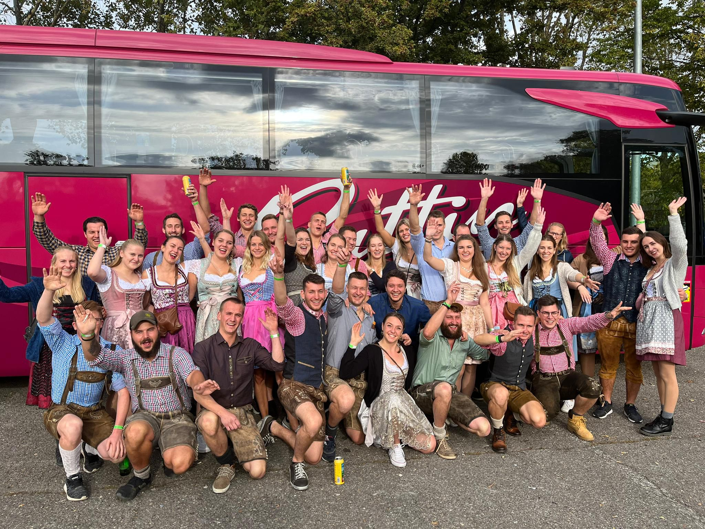
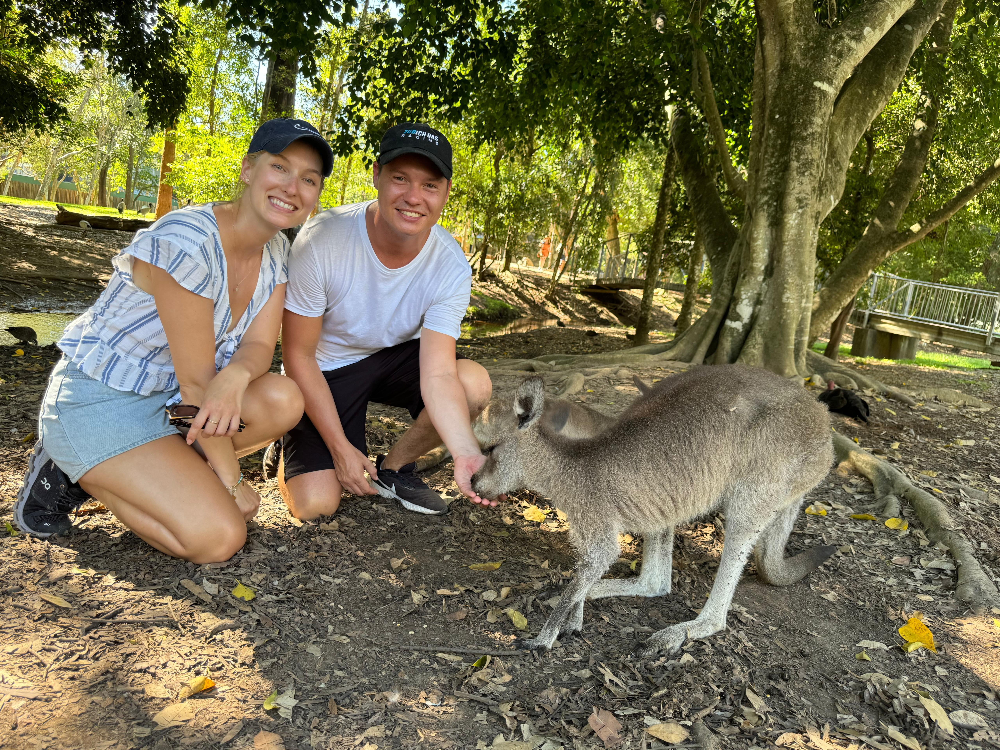
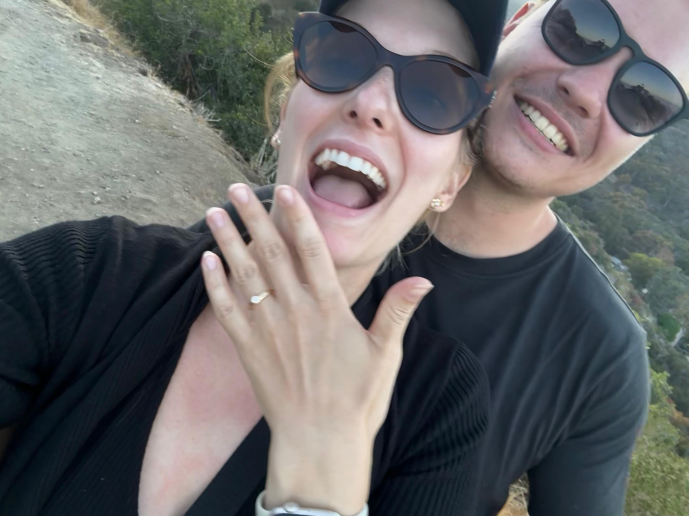

Yeli & Joni

Herzlich willkommen zur schönsten Reise eures Lebens.
September XX 2026 · Schaffhausen, Schweiz
Herzlich willkommen zur schönsten Reise eures Lebens.
September XX 2026 · Schaffhausen, Schweiz
Hier beginnt unsere Liebesgeschichte...

2019 · Erstes Treffen
Hier kannst du eure erste Begegnung beschreiben.

2020 · Erstes Abenteuer
Beschreibe euer erstes gemeinsames Abenteuer oder einen besonderen Moment.

2022 · Zusammengezogen
Ein kleiner Text über euer gemeinsames Zuhause oder wichtige Schritte.

2025 · Verlobung 💍
Hier kannst du den Antrag, den Ort und die Emotionen beschreiben.
Kirche
Kirche Buchberg-Rüdlingen
Dorfstrasse 2
8455 Rüdlingen

Besammlung 13:30, Start Trauung 14:00
Empfang
Bergtrotte Osterfingen
Trottenweg 38
8218 Osterfingen

Transport vom Apéro möglich, Shuttlebus nach Schaffhausen Bahnhof am Abend
Bitte scannen Sie für den Check-In den QR-Code auf Ihrer Einladung.

(Diese Buttons sind nur für Testzwecke sichtbar)

Da wir bereits wunschlos glücklich sind, haben wir keinerlei Geschenkewünsche. Wer dennoch etwas geben möchte, darf uns einen Beitrag an unsere "kleine" Weltreise spenden oder etwas an die Hochzeit mitbringen.
IBAN
Adresse